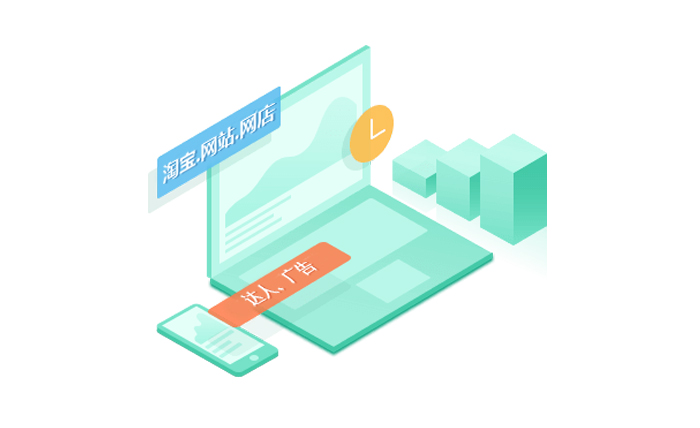
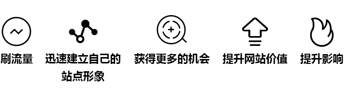

流量和技术支持
2019-01-29

全国真实ip互踩模式，真实人工搜索流量，支持后台量子数据，专业PC无线端引流，优化宝贝关键词排名及手机排行，促进转化率。可直接提高商城、店铺、网站人气、提高击率。可间接用于提高排名、提高销量、提高人气。
应用于：淘宝、网站、达人、网店、广告
功能、优势

1、刷流量：可快速提高网站/网页流量、网店访问量和商品人气，提升小网站的广告收入。
2、迅速建立自己站点形象：比如一个进行商品交易的站点，如果排名很低，客户就会对网站的可信度产生怀疑，从而直接影响产品的销售。
3、获得更多的机会：现在很多广告主在投放广告前，指明要求站点的流量达到10万、5万或者更高，没有好的流量，就会白白失去很多赚钱的机会。
4、提升网站价值：有相当流量，需要出售广告位的站点，提升流量数据可以提升广告费用。
5、提升影响：一个知名企业、上市公司，网站的排名很低对企业自身的形象也是一种影响。